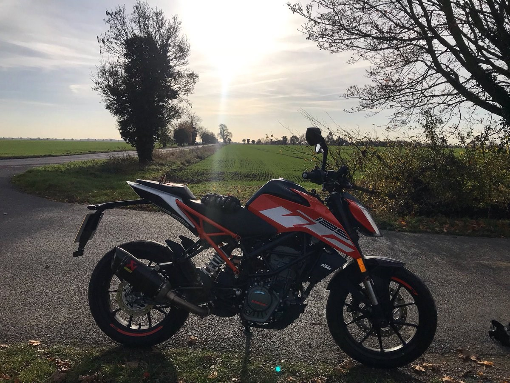

Mireia Brunsó Vila
My name is Mireia Brunsó Vila and I amb a student of the Bachelor's Degree in Computer Engineering in the
Universitat de Girona.
I like to have my surroundings ordered. I am very organised in my tasks to be able to finish them in time.
I amb passioned about what I do. I amb always learning new things in the informatics and programming fields.
My main interest us cybersecurity, but I enjoy other areas like web programming.
Motorbikes
I have ridden motorbikes since I was 16. Its a pastime that makes me discover new spaces in my region. I really enjoy riding in low traffic areas, to take time to observe the scenery.
Football
I have been a FC Barcelona fan since I was born. I love going to the stadium to cheer up the team. I have lived wonderful moments thanks to them, like my trip to Torino for the Women's Champions League final 2022.

Travelling
During my life I have had the oportunity to visit some european countries, always accompanied with the best companions I could imagine. One of my live goals is to explore the world ans discover new cultures and people.